Pills of numerical optimization#
Some basics
In the model-based regularization approach we must solve an optimization problem:
a) unconstrained:
b) constrained:
where $\(\mathcal F :R^n \rightarrow R\)\( and \)D$ is a set of constraints.
For example, box constraints such as:
or $\(a_i \leq x_i \leq b_i \)$
Important properties of \(\mathcal F\)
Differentiability
Def. A function \(f\) is said differentiable in \(x_0 \in R^n\) if it exists a map \(J :R^n \rightarrow R^n\) so that:
This means that \(f\) can be approximated by a linear mapping around \(x_0\).
Def. A function \(f\) is said differentiable in a domain \(D \subset R^n\) if \(f\) is differentiable at each point in \(D\).
Prop. If \(D \subset R^n\) is an open set, \(f:D \rightarrow R\) and all the partial derivatives of \(f\) in \(x_0\) exist and are continuous, then \(f\) is differentiabke at \(x_0\).
N.B. the opposite is not true.
Convex functions
Def. A function \(f:R^n \rightarrow R\) is convex if:
\(f\) is stritcly convex if:
Examples of convex functions:
\(f(x)=||x||_2^2\)
\(f(x)=||Ax-y||_2^2\)
{kind=link}
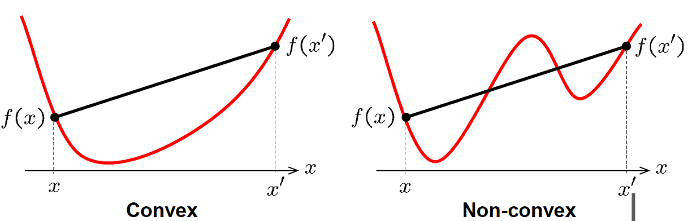
Local and global minima
Def. \(F:R^n \rightarrow R\). \(x_0\) is a strictly local minimum if it exists \(\epsilon >\) so that:
\(x_0\) is a strictly global minimum if:
{kind=link}
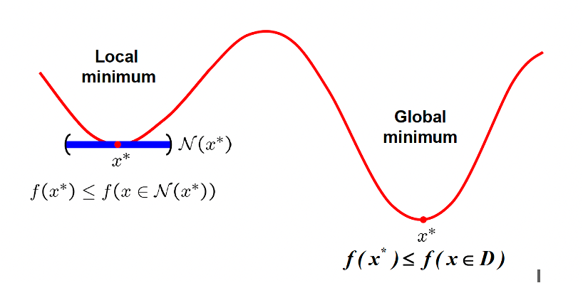
{kind=link}
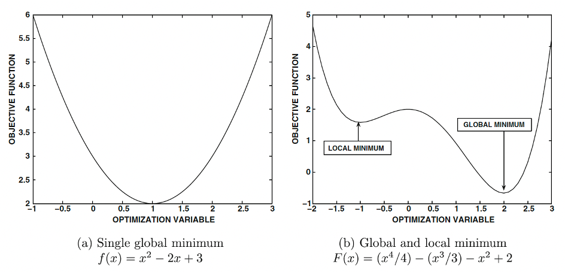
{kind=link}
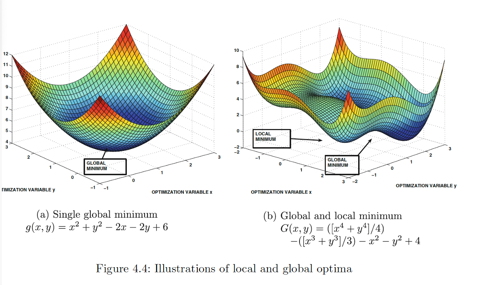
Optimality conditions for unconstrained optimization
First order conditions (necessary conditions)
Prop. If \(f\) is differentiable and \(x^*\) is a point of local minimum then \(\nabla f(x^*)=0\).
N.B. The opposite is not true.
\(x^*\) is called a stationary point.
A stationary point can be a local maximum, a local minimum or a saddle point.
{kind=link}
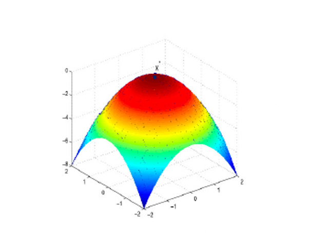
{kind=link}
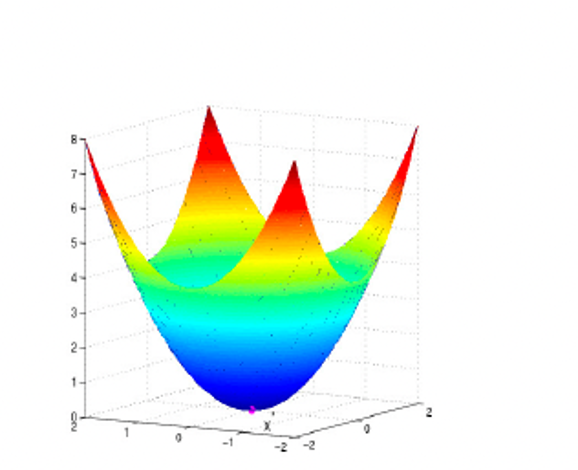
{kind=link}
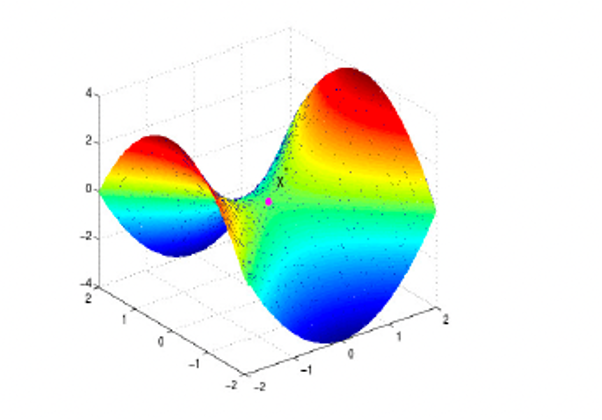
Convex optimization
If the function \(f\) is convex we have particular properties regarding its optimization:
if \(f\) is convex, any local minimum is a global minimum
if \(f\) is strictly convex, it has a unique global minimum.
if \(f\) is convex and differentiable, then any stationary point of \(f\) is a global minumum.
Optimization algorithms: generalities
Optimization algorithms are all iterative algorithms.
This means that, given an initial iterate \(x_0\), the algorithm computes a sequence of iterates \(x_1, x_2 \ldots \) with the properties that:
where \(x^*\) is in general a local minimum, not the global minimum.
Only in convex optimization, \(x^*\) is certainly the global minimum.
The implementation of iterative optimization methods require to define the stopping criteria, which are rules used to stop the iterations before infinity.
The stopping criteria are usually defined by means of inequalities involving tolerances defined by the user and related to the precision of the algorithm.
For example, using the first order conditions we can set the following stopping rule:
where \(\tau\) is the tolerance. When the condition is satisfied, the algorithms stops and the last computed iterate \(x_k\) is the computed solution.
An important characteristic of the iterative method, is the speed of approximating the solutuon, i.e. how many iterations are necessary to satisfy the stopping condition. Heuristially, this is related to the behaviour of the error curve:
{kind=link}
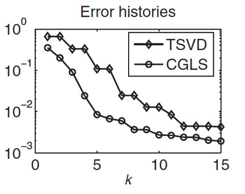
Case studies
Least squares minimization
this function is convex, hence we are ensured that a unique local and global minimum exists.
The minimization can be solved by means of an iterative method such as the Conjugate Gradient Least Squares (CGLS) method that is applied to the normal equations:
The advantage of this method is that it is not necessary to store the matrix \(A\). The CGLS algorithm is characterized by the fact that it uses the matrix \(A\) and \(A^T\) only in matrix-vector operations of the form \(Ax\) or \(A^Tw\). Hence is it is sufficient to pass an operator to perform the two previous products. Each iteration has the cost of two matrix vector operations.
This guarantees that it is not necessary to store the matrix A, but it can be efficiently computed the matrix vector product, depending on the characteristics of A.
{kind=link}

With this method it is possible to perform the so called iterative regularization
Iterative regularization
There is another form of regularization of inverse problems, called iterative regularization.
It consists in stopping the iterative method solving the data fit problem:
(we consider this particular data fitting function in presence of gaussian noise) FAR BEFORE its convergence, i.e. perform only few iterations of the iterative method. We will see this approach more deeply when we will analyse iterative methos for the solution of the minimization problem.
{kind=link}
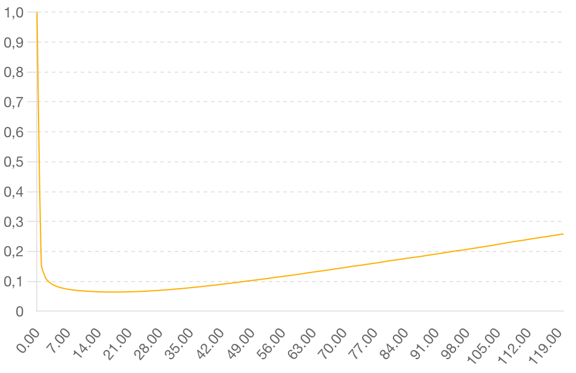

{kind=link}
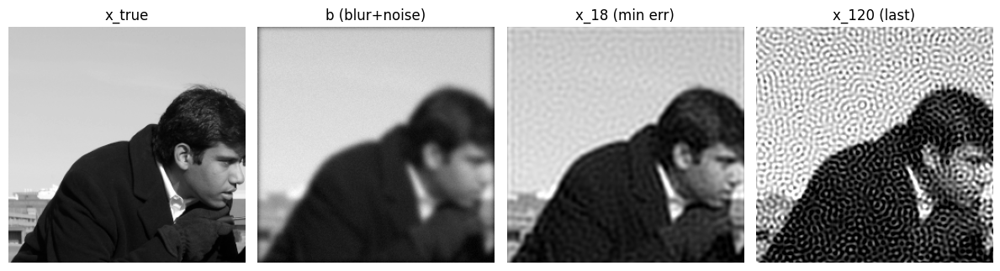

Tikhonov regularization on the image
The function to be minimized is again strictly convex and the CGLS method can be applied to its normal equations:
In this case, if the regularization parameter is well set, we don’t have semiconvergence, but the error plot decreases towards zero.
{kind=link}
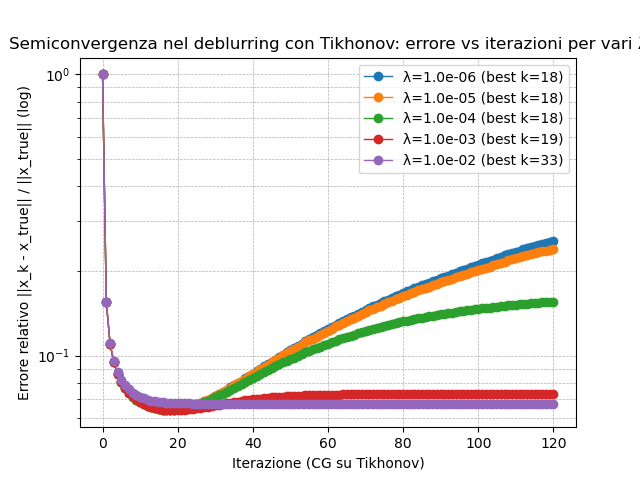

Total Variation regularization
The Total Variation function is convex but not differentiable in the whole domain (in particular in \(x=0\)).
Often, TV is approximated by a differentiable function obtianed by adding a very small positive parameter \(\beta\):
In this case the function is differentiable everywhere.
If we consider the original TV function, we need a minimization algorithm that does not compute the gradient of the function. We then consider the so called proximal algorithms that substitute gradient of a function \(g\) with the proximal operator of \(g\).
Def. The proximal operator of a continuous function \(g:R^n \rightarrow R\) (\(g\) can be a non smooth function) is defined as:
Hence the proximal operator is the solution of a minimization problem for each input \(x\) and it finds a point \(z\) that:
keeps \(g(z)\) small
but also stays close to x
Often there are analytical (closed-form solutions) to the prox problem (but not for Total Variation function).
A collection of proximity operators implemented in Matlab and Python: http://proximity-operator.net/
There are more proximal algorithms. We will use to solve the TV regularization the Chambolle-Pock algorithm.
Total p-Variation
The regularization woth Total p-Variation (\(0<p<1\)) on the image gradient minimizes the following function:
where $\(||\nabla x||_p^p=\sum_{i=1}^m \sum_{j=1}^n (\sqrt{(D_hx)_{i,j}^2+(D_vx)_{i,j}^2})^p\)$
This function is non differentiable in zero and non convex.
The Chambolle-Pock algorithm ca be adapted also to solve non-convex minimizations (Sidky, Emil Y., Rick Chartrand, and Xiaochuan Pan. “Constrained non-convex TpV minimization for extremely sparse projection view sampling in CT.” 2013 IEEE Nuclear Science Symposium and Medical Imaging Conference (2013 NSS/MIC). IEEE, 2013.)
We remark that, since the function is non-convex, then we have more than one local minima and the optimization algorithm converges to one of these local minima, that is not, in general, the global minimum.
The starting iterate \(x_0\) is very important, since the converging point depends on \(x_0\), in the sense that the path of computed iterates \(x_k\) depends on the starting one.